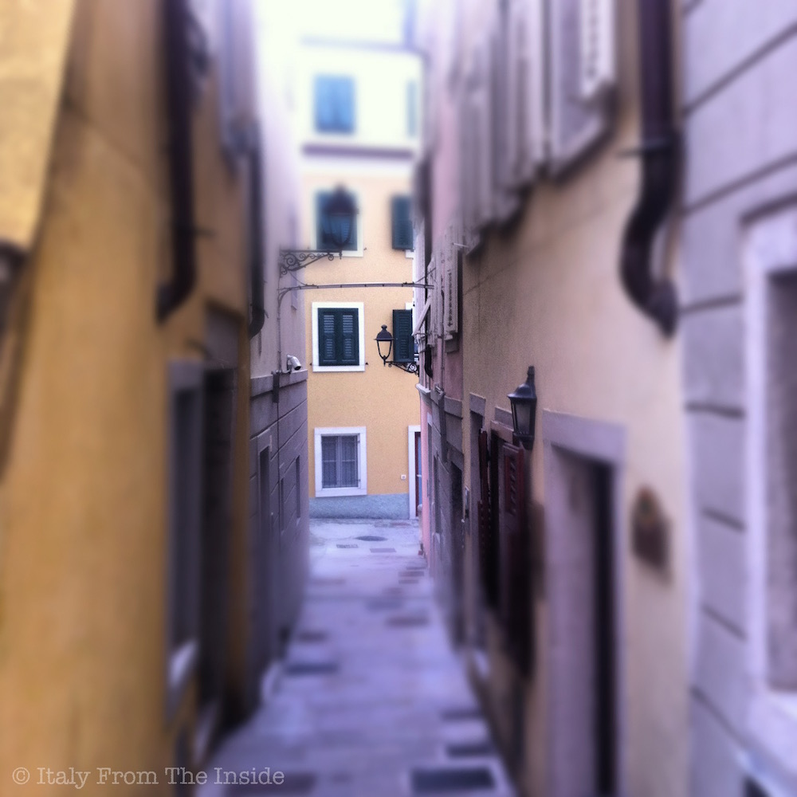

A calle is a narrow street, which, many of you know, is one of the main characteristic of Venice. However, there is an area in Trieste, called città vecchia (old city), that looks like an intricate maze of small calli, where it is a pleasure to stroll and take pictures.